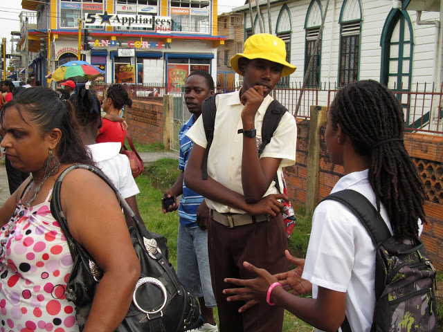
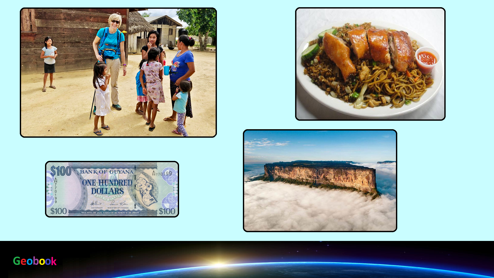

____
Люди
Численность населения - низкая,
Средняя продолжительность жизни — 63 года у мужчин, 71 год у женщин., Этно-расовый состав (по переписи 2002 года):
43,5 % — индийцы;
30,2 % — афро-гайанцы;
16,7 % — смешанного происхождения (метисы и мулаты);
9,1 % — индейцы;
0,4 % — другие (португальцы, китайцы, арабы).
Языки — английский (официальный);
креольский (на основе английского);
карибский хиндустани (диалект бходжпури);
индейские языки.
Религия - Христианство — 57,4 %:
пятидесятники — 16,9 % (Ассамблеи Бога и др.);
католики — 8,1 %;
англикане — 6,9 %;
адвентисты седьмого дня — 5 %;
методисты — 1,7 %;
свидетели Иеговы — 1,1 %;
другие христиане — 17,7 %;
Индуизм — 28,4 %;
Ислам — 7,2 %;
атеисты — 4,3 %;
прочие — 2,7 %

____
